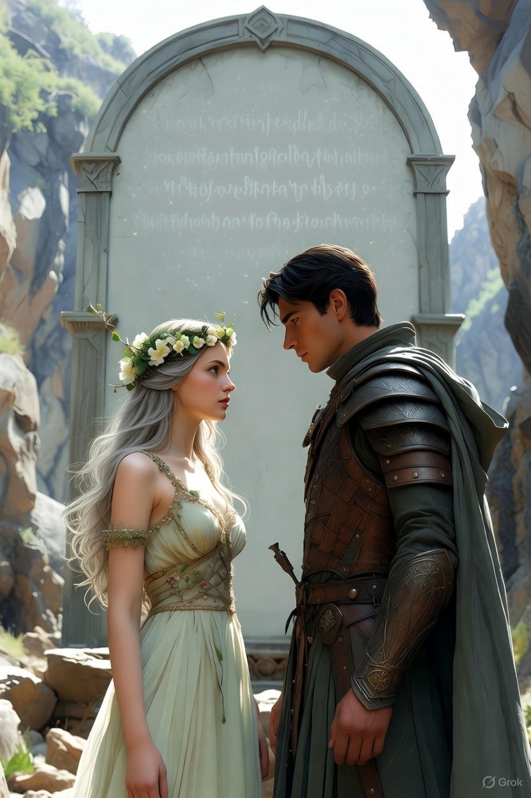
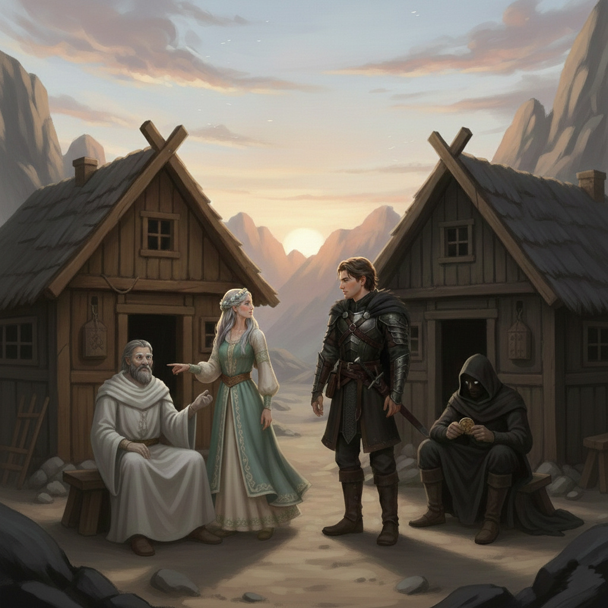
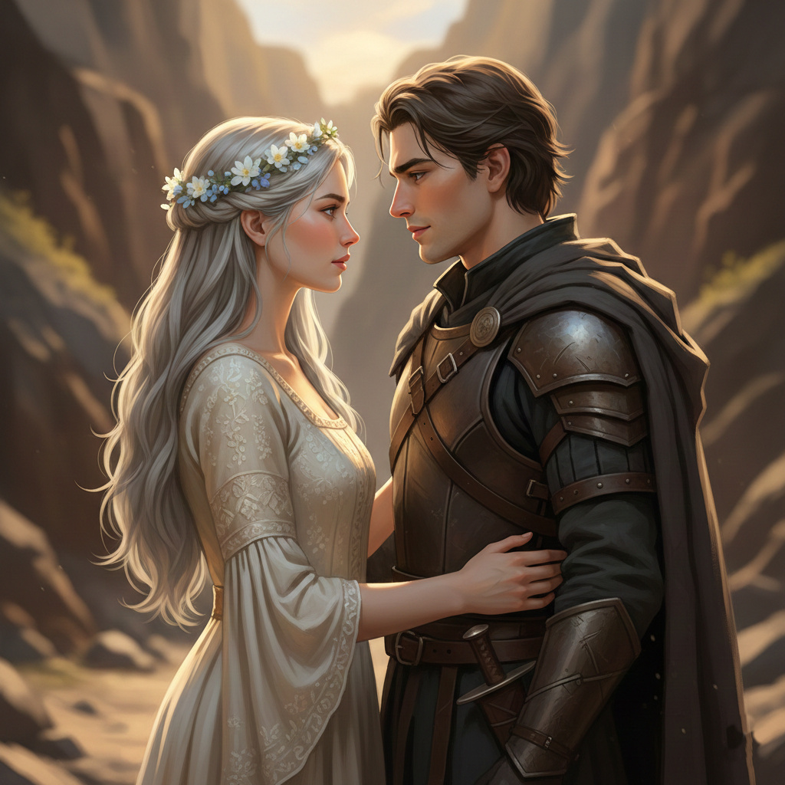

Ajánlom egy kedves barátomnak, aki keresi a pillanatban rejlő örökkévalóságot, és mer hinni a szív órájának szavában.
A sivatag pora lassan átadta helyét egy furcsa, szürkés sziklavilágnak, ahol az út hirtelen kettévált. Középen egy hatalmas, íves kőoszlop állt, rajta egyetlen felirattal: „Az igazság felszabadít, a hazugság bebörtönöz. Válassz bölcsen, mert az idő nem fordul vissza.”
Az elágazás két oldalán egy-egy apró, puritán kunyhó állt. Az egyik előtt egy hófehér köntösbe öltözött, szoborszerű alak ült, akinek szemei a tiszta eget idézték. A másik előtt egy sötét, csuklyás alak gubbasztott, akinek arca árnyékba veszett, kezei pedig szüntelenül egy kopott érmével babráltak.
Alerion megállt, és a két út felé nézett. Az egyik ösvény virágzó völgybe vezetett, a másik sötét, fenyegető szurdokba – de tudta, hogy ebben a világban a látvány gyakran csalóka.
– Tudom, kik ők – suttogta Honóra, miközben az ezüst hajtincse halványan vibrálni kezdett. – A Legendák Könyve ír róluk. Az egyikük csak az igazat képes kimondani, a másiknak pedig minden szava hazugság. De senki sem tudja, melyikük melyik. És csak egyetlen kérdést tehetünk fel, csupán az egyiküknek.
Alerion a homlokát ráncolta. – Ha megkérdezem az igazmondót, melyik a jó út, megmondja. De ha a hazugot kérdezem, ő a rossz felé küld. Mivel nem tudjuk, melyik az igazmondó, bármelyik választ kapjuk, az lehet igaz és hamis is. Ez egy csapda.
Honóra elmosolyodott, és ujjait végighúzta a Porig falvából kapott tarisznyán. – Nem a választ kell keresnünk, Alerion, hanem a kapcsolatot a két lény között. A logika néha erősebb a mágiánál.
A lovag mély levegőt vett, majd határozott léptekkel az egyik kunyhóhoz sétált – nem számított, melyikhez. A fehér köntösbe burkolózó alak elé állt, de úgy tette fel a kérdést, hogy a válasz mindkét lény természetét magába foglalja.
– Mondd meg nekem – kezdte Alerion tiszta hangon –, ha megkérdezném a társadat a másik kunyhó előtt, hogy melyik út vezet a Ködös Kikötő felé, mit válaszolna?
A fehér köntösös alak egy pillanatra megmerevedett, majd a sötét szurdok felé mutatott. – Azt mondaná, hogy az az út vezet oda.
Alerion megpördült a sarkán, és a virágzó völgy felé vezető ösvény felé indult, intve Honórának.
– Várj! – szólt a tündér utolérve őt. – Biztos vagy benne? Hiszen a szurdok felé mutatott!
– Teljesen – felelte Alerion magabiztosan. – Gondolj bele: ha ő az igazmondó, akkor megmondta az igazat arról, hogy a hazug társa hazudni fog, tehát a rossz utat mutatná. Ha pedig ő a hazug, akkor hazudnia kellett arról, hogy az igazmondó mit mondana, hiszen az igazmondó a jó utat mutatná, tehát a hazugnak a rosszat kell mondania. Bármelyikük is ült előttem, a válasz mindenképpen a rossz utat jelölte meg. Így az ellenkező irány a miénk.
Ahogy átlépték a virágzó völgy határát, a két kunyhó és a két alak köddé vált, mintha sosem léteztek volna. Csak a szél hozott feléjük egy halk, elismerő suttogást.
Ez a felismerés – hogy a lovagi szív és a tündéri varázslat mellett a hűvös észre is szükség van – válik a következő fejezet alapkövévé. Amikor a mágia elakad, és az érzelmek összezavarnak, a tiszta logika az egyetlen iránytű.
Alerion közelebb lépett, a bőrpáncélja halkan megcsikordult. Megérintette a nő karját, próbálva visszahúzni őt a jelenbe, de Honóra szemei – azok a különös, szürke íriszek – nem fókuszáltak rá. Úgy nézett át rajta, mintha a horizonton túli világot szemlélné.
– Honóra, nézz rám! Csak egyetlen szót mondj. Megkaptuk a választ? Véget vetünk ennek a bizonytalanságnak?
– A választ akarod, Alerion? Mindenki a választ akarja. Azt hiszik, az a végállomás. A megnyugvás.
Hangja lágyan, de érzelemmentesen csengett, mint a hajnali köd.
– Mert az is. A válasz az irány. A válasz nélkül csak tévelygünk ezek között a sziklák között.
Honóra lassan felé fordította a fejét, de a tekintete továbbra is a távoli üességbe révedt.
– Nem, Alerion. Tévedsz. A válasz... a válasz egy fal. Ha megkapod, megállsz. Nem keresel tovább. Elégedetté tesz, vagy ami még rosszabb: elhallgattat.
– Akkor mit ér az egész? Miért jöttünk el idáig?
– A kérdésért. Csak a kérdés tart életben. A kérdés az, ami kinyitja a világot, ami mozgásban tartja a csillagokat. Amíg kérdezel, addig létezel igazán. Amint kimondod a választ, a történeted véget ér. Ne a megoldást keresd bennem... hanem azt a kérdést, amit félsz megkérdezni még magadtól is.
Alerion elhallgatott. A nap utolsó fényei aranyba vonták Honóra szürke haját, de a nő arca mozdulatlan maradt, mint egy szoboré, aki már rég nem a hús-vér világ szabályai szerint él.
